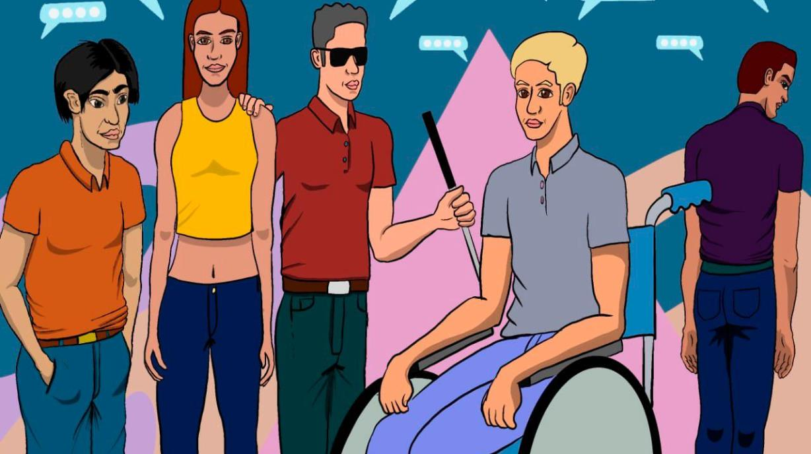
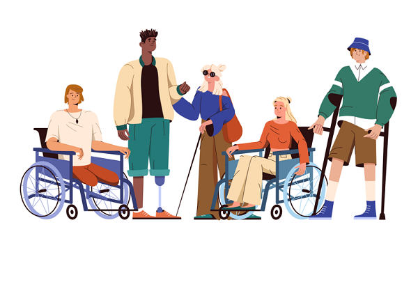

Infraestructura
En muchos campus universitarios, centros comerciales o estaciones de transporte, no existen guías táctiles en los pisos o paneles informativos en braille.

Conciencia Social
Las personas sin discapacidades a menudo no se dan cuenta de que la falta de señalización en braille o guías táctiles impide a otros moverse con independencia.

Inversión pública
En muchos países, el presupuesto destinado a accesibilidad para personas con discapacidad es muy bajo, lo que dificulta la construcción de infraestructuras inclusivas, como paradas de buses accesibles o semáforos con señales sonoras.
